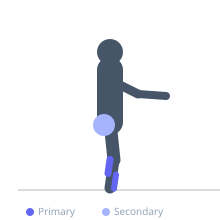

Exercise guide / Single-Leg Balance on Foam Pad
Single-Leg Balance on Foam Pad
Single-leg balance performed on a foam pad or balance pad adds proprioceptive challenge compared to balancing on a firm surface. The unstable foam surface demands continuous micro-adjustments from the ankle, calf, and hip stabilizers to maintain a steady upright position. This is a progression from firm-surface single-leg balance and is used extensively in ankle sprain rehabilitation, ACL post-surgical protocols, and vestibular rehabilitation programs.
Primary muscles
soleus
tibialis anterior
Secondary muscles
gluteus medius
gastrocnemius medial
Stabilizers
transverse abdominis
Equipment
No Equipment (Bodyweight)


Starting position
- Stand on a foam balance pad with one foot centered on the pad. Lift the other foot from the pad. Begin with hands available for safety (near a wall or bar).
Setup
- Use a commercially available foam balance pad (Airex or equivalent). Ensure the pad is on a non-slip floor. Stand near a wall or chair for safety during initial attempts.
Steps
- Step 1: Step onto the foam pad with both feet to establish balance, then lift one foot to stand on one leg.
- Step 2: Maintain an upright posture with a slight knee bend in the standing leg.
- Step 3: Hold the single-leg balance for the prescribed duration, allowing the ankle to make natural micro-adjustments.
- Step 4: Lower the foot and rest before repeating or switching sides.
Coaching cues
- Let the ankle wobble — that wobbling is the proprioceptive training
- Soft knee — not locked out, not deeply bent
- Find a fixed visual focus point to aid balance — stare at a point on the wall
Breathing
- Breathe normally throughout. Focus on balance, not breathing pattern.
Range of motion
- Static hold — the goal is duration with minimal arm movement and no foot touch-down.
Tempo
- Hold for 20-60 seconds per set. Build to 60 seconds before adding further challenge.
Common mistakes
- Gripping the floor with the toes — the foot and ankle should work naturally, not grip
- Holding onto a wall or bar throughout — use it only for safety, not support
- Stiffening the knee completely — a small amount of knee flexion improves balance and reduces joint stress
Safety
- Stand near a wall or chair during early progressions
- For post-surgical rehabilitation, the foam pad balance duration and progression must follow a clinician-prescribed protocol
Training
- mobility: 1–3 reps
- endurance: 1–3 reps
- mobility: 2–3 sets
- endurance: 2–3 sets
- Rest: {'mobility': 30, 'endurance': 30}